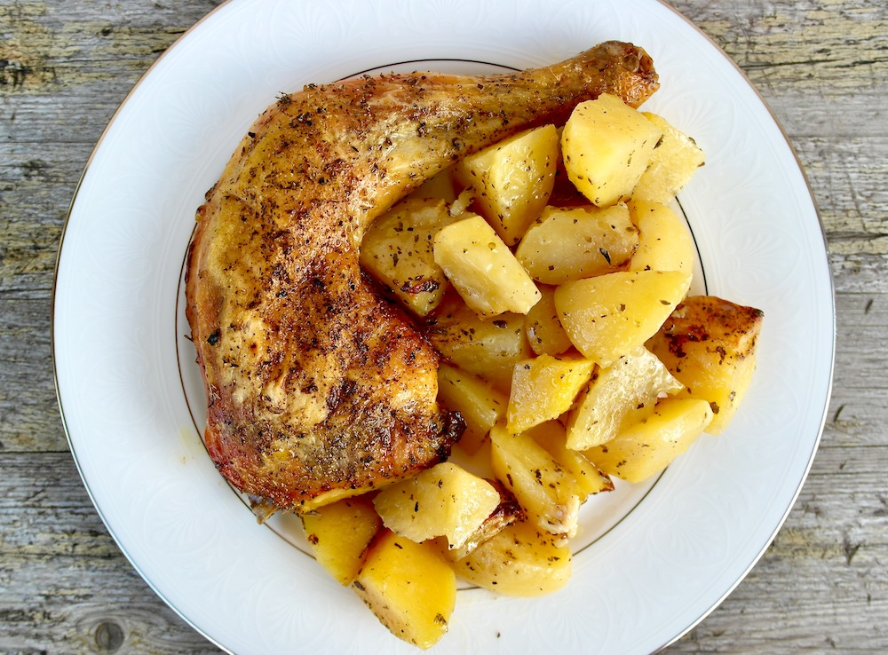

- Chicken pieces – Season with salt, pepper, and your favorite herbs.
- Potatoes – Cut into chunks and toss with olive oil, salt, and pepper.
- Garlic cloves – Scatter whole or crushed for aroma.
- Lemon – Squeeze over before or after baking for brightness.
- Bake at 200 °C (400 °F) for about 45–50 minutes, turning potatoes halfway, until chicken is golden and cooked through.
Home